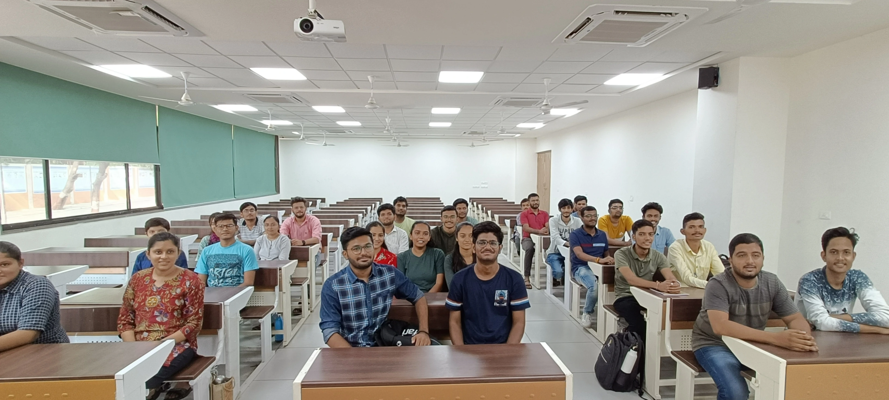
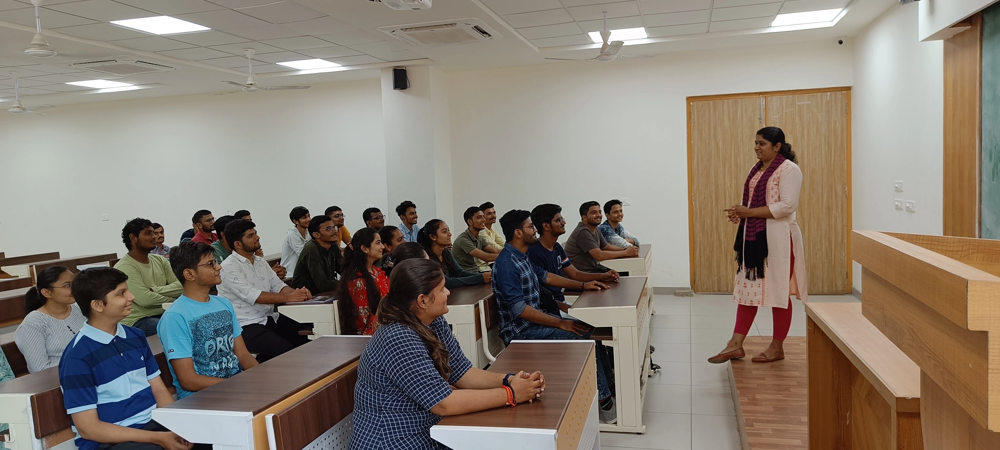
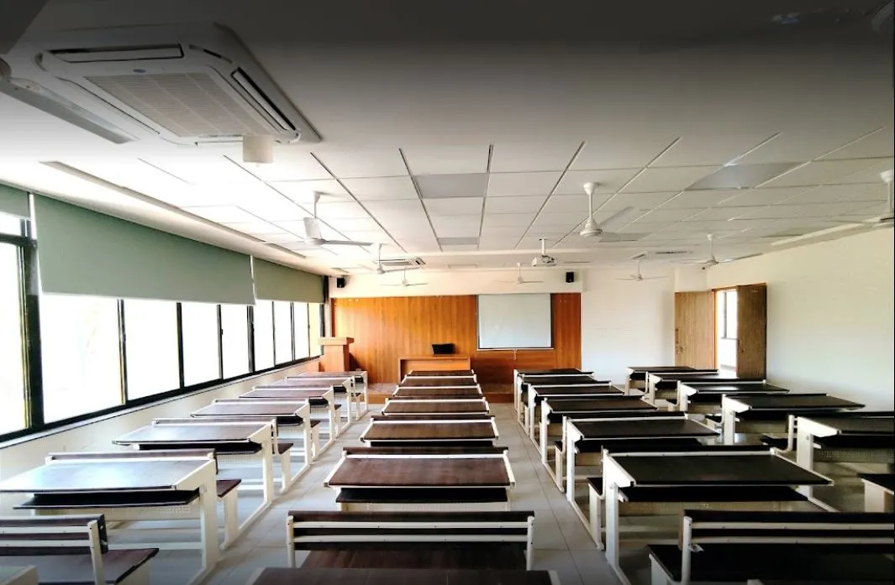

Department of Computer Science, Gujarat University is the most popular, well sought and best resourced Computer Science Department in Gujarat. Ever since its inception, Department of Computer Science has maintained and sustained its legacy as a premium institute in providing high quality education to produce personnel with professional and personal success as well as high ethics and social conduct. The resources at the department are well supported by extensive networked Computer facilities and software aids well along with skilled and experienced faculties. A pioneer institute in initiating and successfully running MCA and PGDCSA since 1982, the Department initiated M.Tech.(Networking and Administration) , M.Tech.(Web Technologies) and PGDNA in 2010.The aim of initiating these programs is to produce professionals ready to meet the current market needs as well as skilled in research capabilities. Understanding that Intelligent Computing is the future of computing, the department initiated yet another post graduate course in Intelligent Computing. The course M.Sc. (Artificial Intelligence & Machine Learning) aims to provide M.Sc. degree in Artificial Intelligence and Machine Learning. This program offers a solid awareness of the key concepts of Artificial Intelligence. The students would be able to develop strong basis of machine learning and data mining. The students would have best career prospects in scientific, business and financial sectors. Further to leverage the versatile system to train Computer professionals department has started 5 Year Integrated M. Sc. (Computer Science) in 2021 To promote and facilitate research in Computer Science and other interdisciplinary subjects, Department offers doctoral courses like Ph.D. (Computer science) under well-experienced guides. The Department also takes the responsibility to the fullest of training the educators. It has organized in recent past UGC short courses and international workshops imparting theoretical and practical training to various colleges and universities teachers at state level and national level